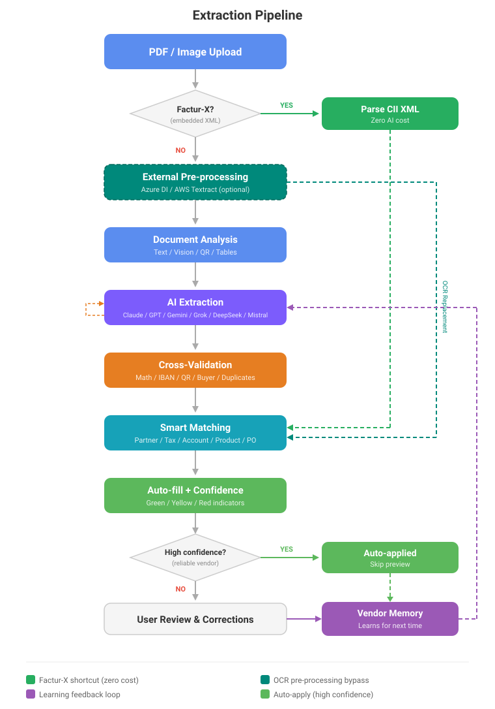

Intelligent vendor bill extraction powered by AI
Replace Odoo's native Enterprise-only OCR with a more accurate, truly learning extraction pipeline. Upload a vendor bill, get structured data auto-filled in seconds.
Upload a PDF or image, get all invoice fields auto-filled with confidence indicators. Choose between Anthropic (Claude), OpenAI (GPT), Google (Gemini), or xAI (Grok).
Structured invoices parsed from embedded XML at zero AI cost. Swiss QR-bill and EPC QR codes extracted for IBAN, amount, and payment reference verification.
When you correct a field, the system remembers and applies it to future invoices from the same vendor. Account-level learning per description and vendor.
Automatic partner, tax, account, product, payment terms, and purchase order matching using vendor history and fuzzy name recognition.
Cross-validation of totals, IBAN mod-97 verification, QR code cross-check, duplicate detection, amount anomaly warnings, and buyer verification.
Batch extraction from list view, background processing via cron with auto-refresh, email integration for automatic extraction, and auto-apply for high-confidence results.

| Odoo Versions | 16, 17, 18, 19 |
| Editions | Community & Enterprise |
| Hosting | Odoo.sh, On-premise, Third-party |
| Dependencies | None (uses only Odoo standard libraries) |
| AI Providers | Anthropic (Claude), OpenAI (GPT), Google (Gemini), xAI (Grok) |
An API key from one of the supported providers is required: Anthropic, OpenAI, Google AI, or xAI. No additional Python packages or system dependencies needed.
This module sends invoice document content (text or images) to the AI provider you select in Settings. The data is sent exclusively to the provider's official API using your own API key. No data is sent to the module author or any third party.
Data sent may include: invoice text, amounts, vendor names, IBAN numbers, tax identifiers, and line item descriptions. If vision mode is used, the document image is also transmitted.
Optional pre-processing services: If configured, document images may also be sent to Azure Document Intelligence or AWS Textract for OCR, using your own credentials.
Developed by Paul ARGOUD — GNU Affero General Public License v3.0 (AGPL-3)